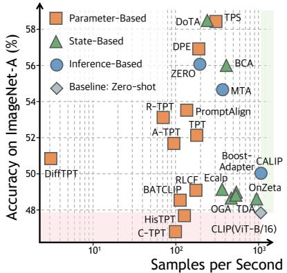

Figureure 1 · : Overview of our controlled empirical studyFigure 1: Overview of our controlled empirical study. We investigate TTA4CLIP through three structured parts: (i) identifying the determining factors in parameter-based updates, (ii) exploring evidence utilization beyond heavy optimization, and (iii) evaluating different paradigms across diverse shifts.这张图概括 What Drives Test-Time Adaptation for 的整体方法流程。阅读时先看模块之间传递的训练信号，再看作者如何把目标拆成可优化的子问题。

Figureure 6 · : Comparison of accuracy and adaptation costFigure 6: Comparison of accuracy and adaptation cost. Parameterbased methods occupy the expensive region, while state/inference-based methods achieve better tradeoff.这张图/表用于判断 What Drives Test-Time Adaptation for 的实验收益来自哪里。重点看替换、消融或跨模型设置下趋势是否一致，而不是只看单个最高分。